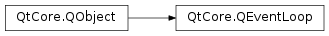

QEventLoop¶
Synopsis¶
Functions¶
- def
exec_([flags=QEventLoop.AllEvents]) - def
exit([returnCode=0]) - def
isRunning() - def
processEvents([flags=QEventLoop.AllEvents]) - def
processEvents(flags, maximumTime) - def
wakeUp()
Detailed Description¶
The
PySide2.QtCore.QEventLoopclass provides a means of entering and leaving an event loop.At any time, you can create a
PySide2.QtCore.QEventLoopobject and callexec()on it to start a local event loop. From within the event loop, callingPySide2.QtCore.QEventLoop.exit()will forceexec()to return.
-
class
PySide2.QtCore.QEventLoop([parent=nullptr])¶ Parameters: parent – PySide2.QtCore.QObjectConstructs an event loop object with the given
parent.
-
PySide2.QtCore.QEventLoop.ProcessEventsFlag¶ This enum controls the types of events processed by the
PySide2.QtCore.QEventLoop.processEvents()functions.Constant Description QEventLoop.AllEvents All events. Note that DeferredDeleteevents are processed specially. SeeQObject.deleteLater()for more details.QEventLoop.ExcludeUserInputEvents Do not process user input events, such as ButtonPress and KeyPress. Note that the events are not discarded; they will be delivered the next time PySide2.QtCore.QEventLoop.processEvents()is called without the flag.QEventLoop.ExcludeSocketNotifiers Do not process socket notifier events. Note that the events are not discarded; they will be delivered the next time PySide2.QtCore.QEventLoop.processEvents()is called without the flag.QEventLoop.WaitForMoreEvents Wait for events if no pending events are available.
-
PySide2.QtCore.QEventLoop.exec_([flags=QEventLoop.AllEvents])¶ Parameters: flags – PySide2.QtCore.QEventLoop.ProcessEventsFlagsReturn type: PySide2.QtCore.intEnters the main event loop and waits until
PySide2.QtCore.QEventLoop.exit()is called. Returns the value that was passed toPySide2.QtCore.QEventLoop.exit().If
flagsare specified, only events of the types allowed by theflagswill be processed.It is necessary to call this function to start event handling. The main event loop receives events from the window system and dispatches these to the application widgets.
Generally speaking, no user interaction can take place before calling . As a special case, modal widgets like
PySide2.QtWidgets.QMessageBoxcan be used before calling , because modal widgets use their own local event loop.To make your application perform idle processing (i.e. executing a special function whenever there are no pending events), use a
PySide2.QtCore.QTimerwith 0 timeout. More sophisticated idle processing schemes can be achieved usingPySide2.QtCore.QEventLoop.processEvents().
-
PySide2.QtCore.QEventLoop.exit([returnCode=0])¶ Parameters: returnCode – PySide2.QtCore.intTells the event loop to exit with a return code.
After this function has been called, the event loop returns from the call to
exec(). Theexec()function returnsreturnCode.By convention, a
returnCodeof 0 means success, and any non-zero value indicates an error.Note that unlike the C library function of the same name, this function does return to the caller – it is event processing that stops.
See also
QCoreApplication.quit()PySide2.QtCore.QEventLoop.quit()exec()
-
PySide2.QtCore.QEventLoop.isRunning()¶ Return type: PySide2.QtCore.boolReturns
trueif the event loop is running; otherwise returns false. The event loop is considered running from the time whenexec()is called untilPySide2.QtCore.QEventLoop.exit()is called.See also
-
PySide2.QtCore.QEventLoop.processEvents(flags, maximumTime)¶ Parameters: - flags –
PySide2.QtCore.QEventLoop.ProcessEventsFlags - maximumTime –
PySide2.QtCore.int
Process pending events that match
flagsfor a maximum ofmaxTimemilliseconds, or until there are no more events to process, whichever is shorter. This function is especially useful if you have a long running operation and want to show its progress without allowing user input, i.e. by using theExcludeUserInputEventsflag.Notes:
- This function does not process events continuously; it returns after all available events are processed.
- Specifying the
WaitForMoreEventsflag makes no sense and will be ignored.
- flags –
-
PySide2.QtCore.QEventLoop.processEvents([flags=QEventLoop.AllEvents]) Parameters: flags – PySide2.QtCore.QEventLoop.ProcessEventsFlagsReturn type: PySide2.QtCore.boolProcesses pending events that match
flagsuntil there are no more events to process. Returnstrueif pending events were handled; otherwise returnsfalse.This function is especially useful if you have a long running operation and want to show its progress without allowing user input; i.e. by using the
ExcludeUserInputEventsflag.This function is simply a wrapper for
QAbstractEventDispatcher.processEvents(). See the documentation for that function for details.
-
PySide2.QtCore.QEventLoop.quit()¶ Tells the event loop to exit normally.
Same as exit(0).
-
PySide2.QtCore.QEventLoop.wakeUp()¶ Wakes up the event loop.
See also
© 2018 The Qt Company Ltd. Documentation contributions included herein are the copyrights of their respective owners. The documentation provided herein is licensed under the terms of the GNU Free Documentation License version 1.3 as published by the Free Software Foundation. Qt and respective logos are trademarks of The Qt Company Ltd. in Finland and/or other countries worldwide. All other trademarks are property of their respective owners.